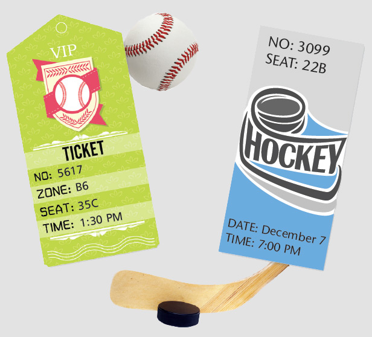

[A combination sample is comprised of different standard components combined together, or with different element(s)
and/or layout(s). This section provides some common combination samples that will occur in the Mathology teacher's guide for your preview and is not meant to be referenced in your markup]
[This section display a preview of combination marginalia component which includes elements and layouts that will generally occured in the Mathology Teacher's Guide epub design template.]
SR-Only Title + Grid + Informalfigure + Title + Unordered List + Marginalia 01:
[Below is a SR-Only title, a grid 02 with three grid items, informalfigure with black borders in grid item 01, Unordered list in grid item 02 and Marginalia 01 in grid item 03.]
Math Conversations

Adding and Subtracting
Do you agree that 140 and 140 is 280? How can you convince someone who is not sure? (Chart suggestions as they
are
offered.)
The brother brushes about 40 strokes. What if he also brushes his teeth twice a day—about how many strokes does
he make? (80) About how many fewer strokes is that than his big sister makes? (200 fewer) How did you
figure that out? (answers will vary)
Code Snippet for Vendor:
Math Conversations
Adding and Subtracting
Do you agree that 140 and 140 is 280? How can you convince someone who is not sure? (Chart suggestions as
they are offered.)
The brother brushes about 40 strokes. What if he also brushes his teeth twice a
day—about how many strokes does he make? (80) About how many fewer strokes is that than his big sister makes? (200
fewer) How did you figure that out? (answers will vary)
Sidebar Combination
[This section display a preview of combination sidebar components which includes elements and layouts
that will generally occured in the Mathology Teacher's Guide epub design template.]
[Below is a Title 01, and a 2 column grid. Left column has a bunch of paragraph text and a note 02. Right column has a Sidebar 01 that has 2 subtitles and 2 unordered lists.]
Math Makes Me Laugh: Planning Guide
This series offers a variety of options to support different groupings with varied math focuses. This helps to promote
differentiated learning.
Large Group Options are lessons that engage a large group (perhaps the whole class) in an investigation that can be continued and revisited
another time. Such experiences can help to establish a community of learners who share vocabulary and practices.
Small Group Options offer you the chance to listen more deeply to children’s thinking and to observe, up-close, how they can demonstrate
their learning. You can probe children’s thinking and understanding; model strategies and language; and encourage
learners.
Options for Independent Work presents five activities. These options offer children the opportunity to practise and consolidate their learning
independently while you meet with small groups or individuals.
Note: After introducing and working on any one of these options, you may decide to introduce another to the same group,
or to reorganize the group before introducing a new option. Your choices depend on your curriculum, your children’s
learning needs, and resources on hand.
Code Snippet for Vendor:
Math Makes Me Laugh: Planning Guide
This series offers a variety of options to support different groupings with varied math focuses. This helps
to promote
differentiated learning.
Large Group Options are lessons that engage a large group
(perhaps the whole class) in an investigation that can be continued and revisited
another time. Such experiences can help to establish a community of learners who share vocabulary and
practices.
Small Group Options offer you the chance to listen more
deeply to children’s thinking and to observe, up-close, how they can demonstrate
their learning. You can probe children’s thinking and understanding; model strategies and language; and
encourage
learners.
Options for Independent Work presents five activities.
These options offer children the opportunity to practise and consolidate their learning
independently while you meet with small groups or individuals.
Note: After introducing and working on any one of these options, you may decide to
introduce another to the same group,
or to reorganize the group before introducing a new option. Your choices depend on your curriculum, your
children’s
learning needs, and resources on hand.
Title + Arial Paragraph Text + Grid + Sidebar 01 + Black Bordered Informalfigure + Title + Unordered
List:
[Title 01 with paragraph text that is arial and differecnt colours. Next is grid 01 with Sidebar 01 with an unordered list without bullets inside grid item 01, grid item 02 contains an informalfigure with black border and grid item 03 contains a Title 02 and an unordered list.]
Math Conversations
Math Makes Me Laugh offers opportunities for children to model and solve addition and subtraction problems using
estimates and calculations, and to estimate, compare, and order numbers to 1000. Prompts are clustered under those
headings. Select prompts based on which will best meet the needs of the group you are working with and initiate
worthwhile conversations. The extent of the conversation will depend on the children’s abilities and interests, the
group’s dynamics, and your instructional and assessment goals. Please remember that these prompts are options for you to
select from, and it is actually the children’s responses that will guide the most powerful and appropriate
conversations.
Estimating and comparing numbers
What do you notice about these numbers? (possible answers include they increase from
the bottom up, they follow a counting-by-25s pattern, the numbers all have a 0 or a 5 in the 1s place)
Suppose there were numbers greater than 175 listed. What would they be? (200, 225, 250,…)
What might we count by 25s? (quarters; other answers children can justify)
Code Snippet for Vendor:
Math Conversations
Math Makes Me Laugh offers opportunities for children to model and solve addition and subtraction problems using
estimates and calculations, and to estimate, compare, and order numbers to
1000. Prompts are clustered under those
headings. Select prompts based on which will best meet the needs of the group you are working with and initiate
worthwhile conversations. The extent of the conversation will depend on the children’s abilities and interests, the
group’s dynamics, and your instructional and assessment goals. Please remember that these prompts are
options for you to
select from, and it is actually the children’s responses that will guide the most powerful and appropriate
conversations.
Estimating and comparing numbers
What do you notice about these numbers? (possible answers include they increase from
the bottom up, they follow a counting-by-25s pattern, the numbers all have a 0 or a 5 in the 1s
place)
Suppose there were numbers greater than 175 listed. What would they be? (200, 225, 250,…)
What might we count by 25s? (quarters; other answers children can justify)
Practice Combination
[This section display a preview of combination practice component which includes elements and layouts
that will generally occured in the Mathology Teacher's Guide epub design template.]
SR-Only Title + Grid + Informalfigure + Note + Practice 01 + Practice List
[Below is a SR-Only title, a grid 03 with three grid items, informalfigure with black borders in grid item 01, a note 02 in grid item 02 and practice 01 that has a practice list within grid item 03.]
Math Conversations
Note: You might choose to use the question in the speech bubble to initiate an investigation. Have children work individually, in pairs, or in small groups. Provide counters and drawing materials and encourage them to think of ways that they can arrive at an answer for the total number of animals (e.g., use ten-frames and counters; count by 1s, 2s, 5s, or 10s; use tally marks). Share responses.
Watch For...
Does the child offer estimates that are resonable?
Can the child count on by 1s, 2s, 5s, or 10s with accuracy to check her/his estimates?
Code Snippet for Vendor:
Math Conversations
Note: You might choose to use the question in the speech bubble to initiate an
investigation. Have children work individually, in pairs, or in small groups. Provide counters and drawing
materials and encourage them to think of ways that they can arrive at an answer for the total number of
animals (e.g., use ten-frames and counters; count by 1s, 2s, 5s, or 10s; use tally marks). Share responses.
Watch For...
Does the child offer estimates that are resonable?
Can the child count on by 1s, 2s, 5s, or 10s with accuracy to check her/his
estimates?
Card Combination
[This section display a preview of combination for the card component which includes elements and layouts
that will generally occured in the Mathology Teacher's Guide epub design template.]
Card 01 + Grid + Title + Title + Pargraph Text + Note + Practice + Practice List:
[Below is the card 01 component that is using the grid 04 layout. In grid item 01 it contains the card's main title. Grid item 02 contains multiple sections that have title 03 and paragraphs. Grid item 03 contains a note 01 and grid item 04 contains a practice 01 with practice list.]
I'm Thinking of A Number!
Engage
Sketch a number line and mark it with the following: 0, 50, 100, 150, 200. Engage children in identifying a “secret
number”:
We learned that the girl in Math Makes Me Laugh is always thinking of numbers. Well, right now I’m thinking of a number.
My number is between 0 and 200. What number am I thinking of?
Each time a child guesses a number, respond by describing your secret number as greater than or less than the guess.
Record the guess on the number line—you might use different markings, including < and > symbols—and keep a tally of the
number of guesses.
Some informalfigure image here.
Alternatively, have two children act this out. Each child stands at one end of a number line, and one child moves up or
down according to each response, thus physically indicating the narrowing range of possibilities.
After each guess ask: What do we know now about my secret number?(e.g., it is greater than 60 and less than 100) When
the number is identified, count the number of guesses. You might repeat to see whether children identify another number
using fewer guesses.
Work On It
Children can continue playing “I’m Thinking of a Number” in pairs or small groups.
Now you get to think of secret numbers. Take turns being the player with a number in your head. Count how many guesses were needed before switching roles.
Suggest that children use a number line to record and tally guesses just as you did with the larger group. Children can
use I’m Thinking of a Number! (LM 5) to record guesses.
Math Focus: compare and order numbers
Materials: number lines; I’m Thinking of a Number! (LM5–optional)
Watch For...
Can the child place numbers appropriately on the number line?
Does the child describe, compare, and/or order numbers accurately?
Does the child make guesses that reflect strategic thinking and a growing understanding of how starting with numbers in
the middle of a range can serve further guesses?
Code Snippet for Vendor:
I'm Thinking of A Number!
Engage
Sketch a number line and mark it with the following: 0, 50, 100, 150, 200. Engage children in identifying a
“secret number”:
We learned that the girl in Math Makes Me Laugh is always thinking of numbers. Well, right
now I’m thinking of a number.
My number is between 0 and 200. What number am I thinking of?
Each time a child guesses a number, respond by describing your secret number as greater than or less than the
guess.
Record the guess on the number line—you might use different markings, including < and > symbols—and keep a
tally of the
number of guesses.
Some informalfigure image here.
Alternatively, have two children act this out. Each child stands at one end of a number line, and one child
moves up or
down according to each response, thus physically indicating the narrowing range of possibilities.
After each guess ask: What do we know now about my secret number?(e.g., it is greater
than 60 and less than 100) When
the number is identified, count the number of guesses. You might repeat to see whether children identify another
number using fewer guesses.
Work On It
Children can continue playing “I’m Thinking of a Number” in pairs or small groups.
Now you get to think of secret numbers. Take turns being the player with a number in your head.
Count how many guesses were needed before switching roles.
Suggest that children use a number line to record and tally guesses just as you did with the larger group.
Children can use I’m Thinking of a Number! (LM 5) to record guesses.
Math Focus: compare and order numbers
Materials: number lines; I’m Thinking of a Number! (LM5–optional)
Watch For...
Can the child place numbers appropriately on the number line?
Does the child describe, compare, and/or order numbers accurately?
Does the child make guesses that reflect strategic thinking and a growing
understanding of how starting with numbers in
the middle of a range can serve further guesses?
Card 02 + Grid + Title + Title + Unordered List with Unordered List with Dashes + Note:
[Below is the card 02 compontent that is using the grid 05 layout. In grid item 01 it contains the
card's main title. Grid item 02 - 01 is a subtitle. Grid item 02 - 02 has an unordered list with a list item that has an unordered
list with dashes. Finally grid item 02 - 03 contains a note 01.]
Independent Inquiry
Numbers Can Tell About...
In Math Makes Me Laugh, a child uses and thinks about numbers as she goes through
her day. Invite children to use
numbers to describe one or several situations in their day. Issue an open-ended invitation after a brief
discussion.
Or, if children would benefit, use specific prompts such as:
How many minutes of recess do you have in 1 week? 1 month? 1 year?
How many minutes do you spend brushing your teeth in 1 day?1 week? 1 month? 1 year?
How many Mondays are in 1 year? How many Mondays have you been alive for?
How many meals do you eat in 1 week? 1 month? 1 year? How many meals have you eaten in your life to date?
Children may record their thinking and calculations in their math journals or on paper. Invite them to
present their work
to others.
Math Focus: estimate sums and differences; add and subtract 3-digit
numbers
Materials: math journals or paper
Code Snippet for Vendor:
Independent Inquiry
Numbers Can Tell
About...
In Math Makes Me Laugh, a child uses and thinks about numbers as she goes
through
her day. Invite children to use
numbers to describe one or several situations in their day. Issue an open-ended invitation after a brief
discussion.
Or, if children would benefit, use specific prompts such as:
How many minutes of recess do you have in 1 week? 1 month? 1 year?
How many minutes do you spend brushing your teeth in 1 day?1 week? 1 month? 1 year?
How many Mondays are in 1 year? How many Mondays have you been alive for?
How many meals do you eat in 1 week? 1 month? 1 year? How many meals have you eaten in your life to
date?
Children may record their thinking and calculations in their math journals or on paper. Invite them to
present their work
to others.
Math Focus: estimate sums and differences; add and subtract 3-digit
numbers